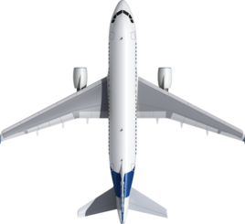
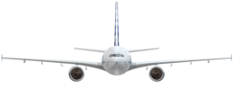
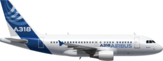
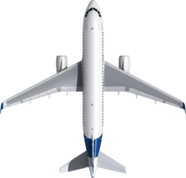
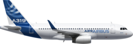
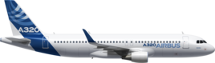
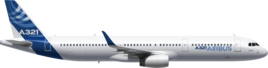

| |
The A320 single-aisle jetliner family consists of the A318, A319, A320 and A321, and is remarked as the best-selling aircraft product line of all time. It is used in a full range of services from very short-haul airline routes to intercontinental segments, on operations from challenging in-city airports to high-altitude airfields and an Antarctic ice runway, and on VVIP and government missions with the most discerning passengers.
Constantly, however, to ensure this true market leader keeps its competitive edge, Airbus continues to invest in improvements across the product line, including development of the A320neo new engine option, new additions to the jetliner’s aerodynamics, upgrades to the widest passenger cabin in its class, and extended service intervals for the airframe.
Airbus’ launch of the A320neo in December 2010, have brought 1,420 orders and commitments had been logged for this enhanced family as of November 2011 – setting a sales record of its own with bookings from airlines and leasing companies alike. This represents an important percentage of the 8,000-plus firm orders booked for all A320 aircraft types.
The A318 was designed so that it will be a prospect to serve markets with frequent services on low-density routes, the A318 accommodates 107 passengers in a two-class cabin configuration. Airlines enjoy the benefits of Airbus technology, including one of the newest wing designs in its size category and the application of advanced materials in the airframe – thus providing more efficient operations and lower fuel consumption.
| Category | Data |
|---|---|
| Manufacture date | 2002 |
| Range | 5,950Km |
| Seating Arrangement | 107 persons (2 classes) |
| Max Payload | 11.0 tonnes |
| Engines | PW6000Ax2 or CFM56-5Bx2 Thrust Range:96-106kN |
| Wingspan | 34.10m |
| Height | 12.51m |
| Overall Length | 31.44m |
As a slightly smaller version of Airbus’ A320, the A319 continues to prove its versatility – enabling carriers around the world to benefit from the aircraft’s range options and seat layout flexibility. In addition to the standard 124-seat configuration with a range of up to 3,740 nautical miles, Airbus offers an option with a seating capacity of up to 156 passengers – a version that is being ordered by an increasing number of low-cost airlines
| Category | Data |
|---|---|
| Manufacture date | 1997 |
| Range | 6850* |
| Seating Arrangement | 124 persons (2 classes) |
| Max Payload | 13.2 tonnes |
| Engines | V2500-A5x2 or CFM56-5Bx2 Thrust Range:98(120)Kn |
| Wingspan | 34.10m |
| Height | 11.76m |
| Overall Length | 33.84m |
With tremendous success, Airbus launched its best-selling single-aisle product line with the A320, which to this day continues to set industry standards for comfort and operating economy. It seats 150 passengers in a two-class cabin – or up to 180 in a high-density layout for low-cost and charter flights – the A320 is in widespread service around the globe on services that vary from short commuter sectors in Europe, Asia and elsewhere to trans-continental flights across the United States.
The A320’s innovative technology includes the extensive use of weight-saving composites, an optimised wing that is 20 per cent is more efficient than previous designs, a centralised fault display for easier troubleshooting and lower maintenance costs, along with Airbus’ fly-by-wire flight controls.
The advantages of the fly-by-wire controls – which were pioneered on the A320 – are abundant. They provide total flight envelope and airframe structural protection for improved safety and reduced pilot workload, along with improved flight smoothness and stability, and fewer mechanical parts.
| Category | Data |
|---|---|
| Manufacture date | 1987 |
| Range | 6150* |
| Seating Arrangement | 150 persons (2 classes) |
| Max Payload | 16.6 tonnes |
| Engines | V2500-A5x2 or CFM56-5Bx2 Thrust Range:98(120)Kn |
| Wingspan | 34.10m |
| Height | 11.00m |
| Overall Length | 37.57m |
The benchmark A320 Family’s largest member – the A321 – offers airline customers the best seat-mile costs of any single-aisle aircraft and seating capacities comparable to that of a widebody jetliner.
This aircraft has a stretched fuselage with an overall length of 44.51 metres, along with an extended operating range of up to 3,000 nautical miles while carrying a maximum passenger payload. The A321 offers the lowest fuel burn, emissions and noise footprint in its class.
The A321 can accommodate185 passengers in a two-class configuration (16 in first class and 169 in economy) – while offering 220 passengers for charter and low-cost operators. The twin-engine A321 can be powered by either of two engine options: the CFM International CFM56 or International Aero Engines’ V2500
| Category | Data |
|---|---|
| Manufacture date | 1993 |
| Range | 5950 |
| Seating Arrangement | 185 persons (2 classes) |
| Max Payload | 21.2 tonnes |
| Engines | V2500-A5x2 or CFM56-5Bx2 Thrust Range:98(120)Kn |
| Wingspan | 34.10m |
| Height | 11.76m |
| Overall Length | 44.51m |